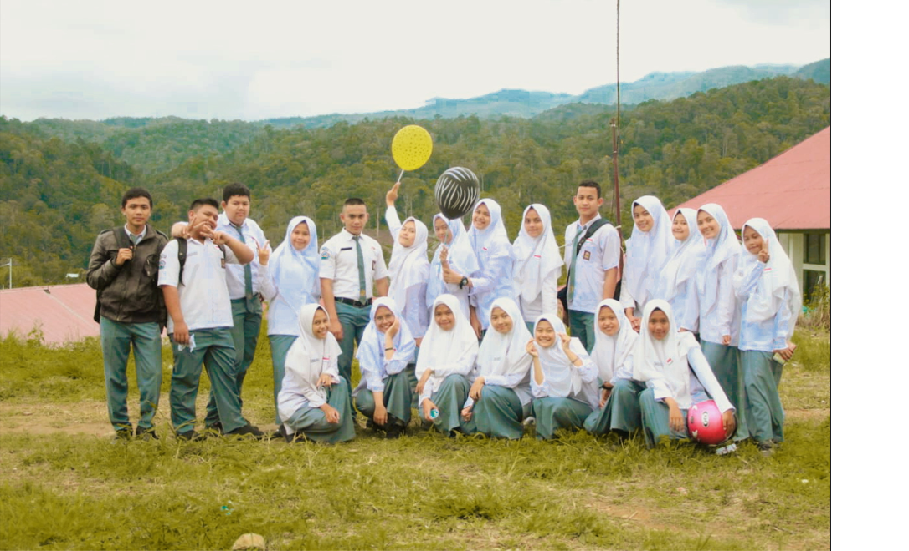
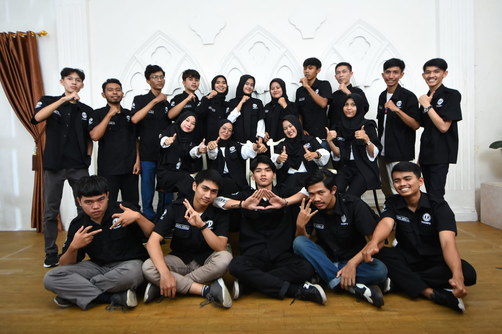
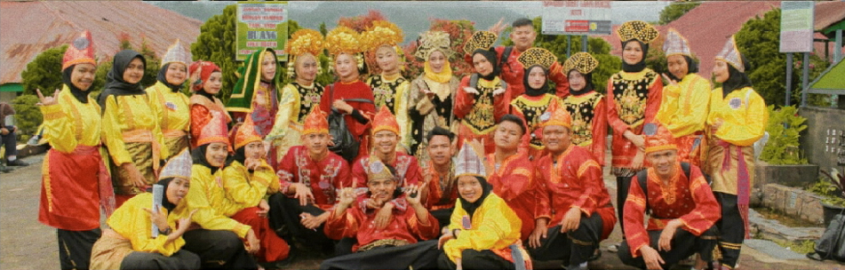
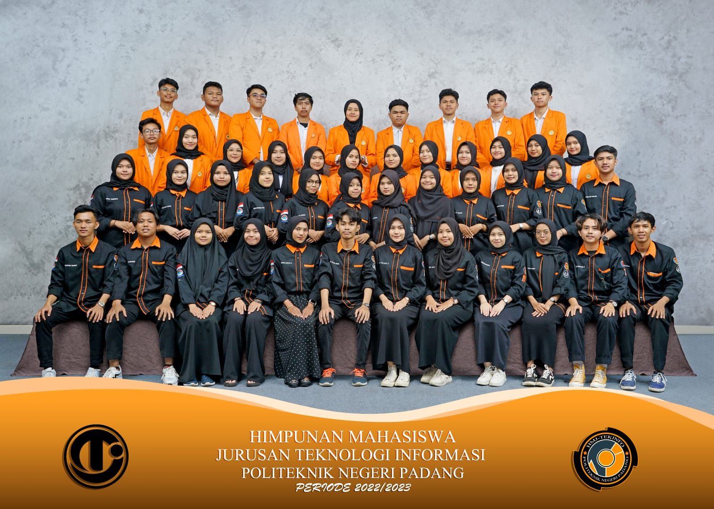

About
Perkenalkan saya Nurul Prima Annisa biasa dipanggil Nurul, Saya lahir pada 23 Februari 2002.
Saya memiliki hobi mendengarkan musik serta membaca. Saya merupakan anak pertama dari dua bersaudara,
yang mana saya memiliki satu orang saudara laki-laki yang bernama Muhammad Raffi Rian Syah.
Saat sekarang ini saya sedang menempuh pendidikan tinggi di sebuah Vokasi yaitu Politeknik Negeri Padang
dengan jurusan Teknologi Informasi prodi D4 Teknologi Rekayasa Perangkat Lunak semester 6.
Pendidikan
Pada 2017-2020 saya menempuh Pendidikan Sekolah Menengah Atas dengan Nama
SMA N 2 GUNUNG TALANG dengan jurusan Matematika Ilmu Pengetahuan Alam atau yang
lebih dikenal dengan MIPA. Selama di SMA tersebut saya menjadi Top 10 murid dengan
nilai terbaik selama kelas 10-12 serta aktif mengikuti kegiatan Extrakulikuler seni
sejak awal mulai sekolah.

Untuk sekarang saya sedang menempuh Pendidikan Tinggi di sebuah Vokasi yaitu
Politeknik Negeri Padang dengan Jurusan Teknologi Informasi prodi D4 Teknologi
Rekayasa Perangkat Lunak dengan masa perkuliahan dari 2020-2024.

Pengalaman
Dari berbagai macam kegiatan Non Pendidikan yang saya ikuti disini saya banyak mendapatkan
pembelajaran serta pengalaman dari berbagai macam kegiatan tersebut. Ada beberapa kegiatan yang saya
ikuti yang mana saya berhasil mendapatkan beberapa sertifikat dan juga pengalaman yang dapat dijadikan
pembelajaran dalam hidup.
Kesenian Musik dan Tari

Saya pernah mengikuti kegiatan dibidang Seni yang mana kegiatan tersebut dilaksanakan ketika Saya
masih mengenyam bangku Pendidikan sewaktu SMA, kegiatan tersebut merupakan sebuah kegiatan perlombaan membuat
sebuah musik baru menggunakan barang bekas seperti menggunakan ember cat yang sudah tidak terpakai, botol kosong
yang diisi dengan bebatuan kecil dan juga botol kaca yang diisi air, namun dapat menghasilkan suara yang berbeda tiap tingkatan
airnya, ketika saya mengikuti perlombaan tersebut kelompok kami meraih juara 1 perlombaan musik dengan barang bekas tingkat nasional.
Himpunan Jurusan Mahasiswa Teknologi Informasi

Kemudian saya juga mengikuti kegiatan kampus yaitu bergabung dengan Himpunan Mahasiswa Teknologi Informasi atau disingkat dengan HMJ TEKINFO
yang mana disini saya mendapatkan banyak pengalaman seperti belajar menjadi bertanggung jawab dalam sebuah acara dalam himpunan tersebut,
melatih public speaking dan juga banyak hal lainnya. Dalam himpunan ini saya pernah menjadi koordinator bidang dalam suatu acara.
Kontak